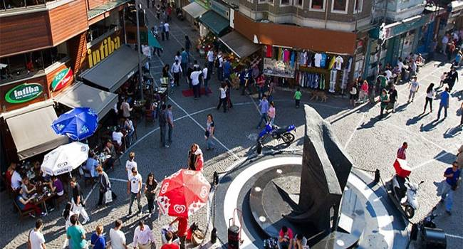

★★★★★
Beşiktaş terapi sürecinde ofisin huzurlu atmosferi ve profesyonel yaklaşım ilişkimizi çok daha sağlıklı yürütmemizi sağladı.
Psikolog randevu sürecinizi karmaşık sanmayın: doğru bilgi ve tek mesajla Beşiktaş’ta yüz yüze veya online görüşme planlayabilirsiniz. Bu sayfa, “ne zaman, nasıl, ne kadar sürede?” sorularını netleştirir; Beşiktaş psikolog aramasıyla gelen yüksek niyetli danışanlar için dönüşüm odağındadır.
Kontenjan müsaitse gün içi planlama yapılabilir. Erken saatlerde yazmanız bekleme süresini kısaltır.
Bugün Randevu PlanlaOnline terapi zaman ve ulaşım maliyetini düşürür; yoğun iş temposu veya şehir dışı seyahatlerde sürekliliği korur. Görüntülü görüşmede gizlilik için sessiz oda, kulaklık ve stabil internet önerilir. Yüz yüze terapi İstanbul ofisinde ise beden dili, mekânsal “ayırma” hissi ve rutin olma deneyimi bazı danışanlar için ek kazanım sağlar.
En iyi seçim: hedefiniz ve yaşam düzeniniz. Klinik açıdan ikisi de etkili olabilir; hibrit modelde (ayda bir yüz yüze, diğer seanslar online) ilerleyen danışanlarımız oluyor. Beşiktaş psikolog rehberinde uzman seçimi ve güven konusuna da değindik.
Motivasyon dalgalıdır; “yarın kesin ararım” çoğu zaman ertelemeye dönüşür. Müsaitlik olduğunda aynı gün randevu ile düşünce–eylem boşluğu kapanır. Özellikle kaygı yüklü dönemlerde erken seans, belirtilerin pekişmesini yavaşlatmaya yardım eder. Anksiyete terapisi Beşiktaş sayfasında tetikleyici yönetimi ve beceri çalışmalarına giriyoruz.
Terapi, mahrem bir süreçtir. Görüşmelerde paylaşılan içerikler etik çerçevede korunur; kanuni istisnalar (ör. ciddi zarar riski) dışında üçüncü kişilerle paylaşılmaz. Online görüşmelerde bağlantı güvenliği ve ortam mahremiyeti için kısa bir kontrol listesi ilk mesajınızda paylaşılabilir. İstanbul psikolog arayan danışanlar için şeffaf iletişim, güvenin temelidir.

Depresyon belirtileri, ilişki çatışmaları veya yoğun kaygı yaşıyorsanız; depresyon terapisi Beşiktaş veya çift terapisi Beşiktaş sayfalarımız konuya özel iç bağlantılar sunar. Randevu öncesi blog yazılarımızdan psikolog randevu süreci yazısı sürecin tamamını özetler.
Özetle: psikolog randevu Beşiktaş ile bugün başlayın — çünkü iyilik hâli birikerek değil, küçük tutarlı adımlarla inşa edilir. Bir mesaj yeter.
Kısa talep: “Merhaba, Beşiktaş’ta yüz yüze uygun saatlerinizi öğrenebilir miyim? Hafta içi akşam uygunum.” Online talep: “Online terapi için müsaitlik ve ücret bilgisi rica ediyorum.” Çift: “Çift terapisi için birlikte geleceğiz; ilk uygun hafta sonu var mı?” Bu şablonlar psikolog randevu süreci yazısıyla birlikte kullanıldığında ilk iletişimi hızlandırır.
Terapi düzenlilik ister; randevu saatleri mümkün olduğunca korunur. İptal veya erteleme gerekiyorsa mümkün olan en erken saatte bilgi vermek, başka danışanlara da kontenjan açar. Ücretlendirme ilk mesajda şeffaf biçimde paylaşılır; görüşme türü (online/yüz yüze) ve süreye göre netleşir. Şeffaflık, Beşiktaş psikolog ile güven ilişkisinin parçasıdır.
Çoğu durumda herhangi bir belge gerekmez. Özel sigorta veya kurumsal yönlendirme gibi istisnalar varsa önceden bildirmeniz yeterlidir. Terapistlik sürecinde amaç idari engelleri azaltmak; odak terapötik çalışmadır.
WhatsApp veya telefon → müsaitlik → onay. İlk seans tarihi kesinleşince hazırlık için kısa yönlendirme paylaşılır.
Seans süresi ve görüşme türüne göre tarife iletilir; terapi süresi hedefe göre değişir.
Gizlilik garantisi ve bilimsel temelli plan ile ilerleyin.
Ofis ve Beşiktaş merkez görselleri; profesyonel terapi ortamı ve ulaşım hissi yansıtır.


Google’da yorumlar
Beşiktaş Psikolog — Google İşletme Profili